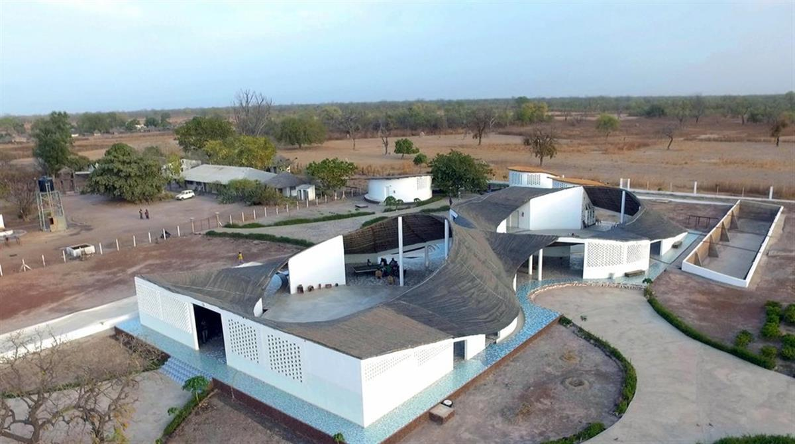
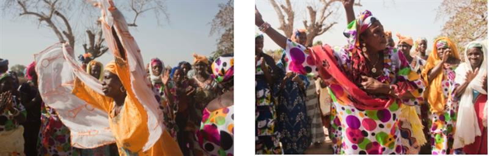

THREAD: ARTIST RESIDENCY & CULTURAL CENTER
Thread is a socio-cultural center with a residency program to allow local and international artists to live and work in Sinthian, a rural village in Tambacounda, the southeastern region of Senegal. It houses two artists’ dwellings, as well as ample indoor and outdoor studio space.
Thread's role as a socio-cultural center is most pronounced in its function as an agricultural hub for Sinthian and the surrounding villages. We provide training, fertile land, and a meeting place for the local and regional community to increase their economic stability. The roof collects and retains rainwater, creating a viable source for the majority of these new agricultural projects during the eight-month dry season.
Thread is a flexible and evolving public space -- venues for celebrations, classes in language and health, and performances and village meetings are just a few of the ways the local population has taken over programming of the new community center.
The mission of Thread is twofold: to allow artists access to the raw materials of inspiration found in this rarely-visited area of the world; and to use art as a means of developing linkages between rural Senegal and other parts of the globe.
The team behind Thread speaks to its collaborative nature. Its concept and construction were spearheaded by local Sinthian leader and doctor, Dr. Magueye Ba. A Senegalese environmental sustainability expert, Moussa Sene, is its general manager. And its director, Nick Murphy, represents the organization that has made the project possible: The Josef and Anni Albers Foundation through the guidance of its Executive Director, Nicholas Fox Weber.

A PROJECT OF THE JOSEF AND ANNI ALBERS FOUNDATION
Josef and Anni Albers were two extraordinary artists and human beings, both of them renowned for their work at the Bauhaus School in Germany prior to the closing of that institution in 1933. That year, they moved to the United States, where they would live for the rest of their lives. Anni, primarily a textile artist, was the first in her field to be given a solo exhibition at the Museum of Modern Art in New York, in 1949, and Josef, a color theorist and painter and teacher, was the first living artist to be the subject of a solo exhibition at the Metropolitan Museum of Art in New York, in 1970.
The artistic program for Thread is inspired both by Anni Albers’s belief in the vital value of “starting at zero” and Josef Albers’s lifelong desire “to open eyes.” Anni used to say that “you can go anywhere from anywhere,” and Josef made it a perpetual goal to employ 'minimal means for maximum effect.” Those beliefs are fundamental to Thread. Otherwise, there is no fixed artistic program.
Despite this support and involvement in Thread’s program and construction, Thread's most common purpose is as a cultural center and water source for the village; the artists are their guests. Notions of we and they are wonderfully confused at Thread, as we hope too to challenge concepts of the 'West', the 'developing world,' and the institutional and social functions of art.
Thread posits that art, culture, and architecture should be supported right along side agriculture, education, and health. And that all of these sectors support one another. As such, we are mobilizing the same tenets of inclusion and intersection that made the Bauhaus such a creative success. This is a project about connection and linkage. Between two distinct points, persons, places, or perspectives. To be like thread by forming connections that run through us, and not around us.
Open on original site ↗Video by Zoya Films | zoyafilms.com
WHY SINTHIAN?
A Senegalese doctor and local leader, Magueye Ba (pictured above), moved to the area from Dakar in order to help the people of the village and the surrounding region. Le Korsa is a non-profit that has worked directly with Dr. Ba to support his efforts in running Sinthian’s medical center, building its first kindergarten, funding its teachers’ salaries, and helping the community initiate new agricultural practices.
Nicholas Fox Weber, 35-year Executive Director of The Josef and Anni Albers Foundation, founded Le Korsa in 2005 to galvanize support for the work he had been doing in Senegal over the previous decade.
In 2013, with Dr. Ba’s enthusiastic encouragement, we wanted to add opportunities for engagement across cultural lines and support for the arts. Mr. Weber’s affiliation with the Albers Foundation and his inexorable desire to perpetuate the ideals of the artists it celebrates provided an obvious choice for an organization that might help spearhead this addition to the Sinthian community.
Thread exists at a crossroads between art space, community farm, water source, studio-gallery-performance space, community center, platform for culture sharing, local hangout, (inter)national residency, kid's play gym, and village cell phone charger. We hope its atypical plurality will help establish it as a positive precedent.
Access to the numerous and varied narratives that exist in West Africa is far too limited. This has resulted in a devastatingly myopic perception of what exists here, particularly in the rural communities. Thread seeks to give a greater platform for people from Tambacounda to share their own stories, and with a wider, national and international audience.
Thread is the material of linkage. It is what holds things together, and it also provides endless opportunity: both of which are goals of the center. The word particularly honors Anni Albers, who, at age twenty-two, was instructed, by the great artist Paul Klee, 'to take a line for a walk;' she decided to take thread wherever it might go. Anni said that this led her to realize that 'you can go anywhere from anywhere', and we have constructed Thread, and will assure its continuation, to provide people with the opportunity to go and do as they want--through art.

THE RESIDENCY
The residency program facilitates the traveling to and inhabiting of the remote destination of Sinthian in order to allow more people from different parts of West Africa and the world to come to this inspiring location. The residency is not limited to artists from abroad as it often hosts local and Senegalese artists. Too, we are interested in artists with a flexible but deep interest in the locality; not those with a casual or condescending curiosity of the 'other.' The residencies are an opportunity to create cultural bridges.
The residencies are awarded to dancers, painters, writers, choreographers, architects, designers, sculptors, photographers, musicians and others who will be able to focus on their own work while at other times interacting with the local community and opening doors to a population that has little exposure to ulterior perspectives and forms of creativity not local to Sinthian.
After being selected for the residency, artists discuss with the director of Thread and with its onsite manager, the program for their four to eight week stay. Each residency will be formulated around each artist’s needs, and the extent to which he or she hopes to engage with the people of Sinthian and Tambacounda.
So Thread provides a new environment for making artwork, but we also hope it will tap into the rich practices of dance and music that have ebbed in the region lately.
Moussa Sene heads up programming for Thread, outside of the residencies. Courses are taught in environmental sustainability practices, agriculture, English language, etc. The majority of this program, has been and will continue to be developed with the community. Artists are also able to make use of Thread's role as a cultural center in cases where they would like to collaborate with the local population.
This function, along with the building’s role as a water source, ensures that Thread is operational throughout the year, regardless of whether or not there is an artist in residence.
Dakar and some neighboring cities are quickly becoming recognized as great centers for art practice and conversation. While this is encouraging, rural Sinthian and villages of its kind, as well as the imcomparable region of Tambacounda, run the risk of being left behind, particularly during the current migration crisis striking the region. We hope this project will prove that these remote villages, rural areas in general, and the region have great potential to be centers themselves: of innovation, of culture, and of exchange.
SOURCE: Thread